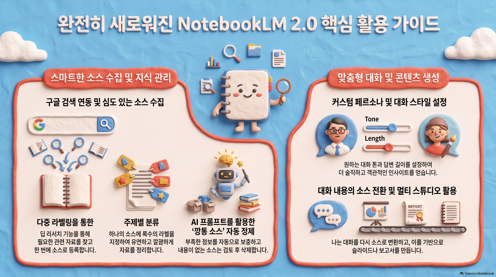

60분 실습 강의
노트북LM 마스터하기
내 자료로 만드는 AI 학습 도우미
자료 추가출처 확인요약과 퀴즈
강의 순서
60분 진행표
| 시간 | 내용 |
|---|---|
| 0~13분 | 개념 · 새 노트북 |
| 13~27분 | 유튜브 소스 · 첫 질문 · 출처 |
| 27~39분 | NotebookLM 2.0 기능 안내 |
| 39~42분 | 짧은 휴식 |
| 42~60분 | 요약 · 퀴즈 · BananaNL · 마침 |
개념
내 자료 중심의 AI 학습 도우미
1
자료 추가
문서 · 웹페이지 · 유튜브 등 학습 자료 모으기
2
질문
추가한 자료 안에서 필요한 내용 찾기
3
결과 활용
요약 · 핵심 질문 · 퀴즈로 바꾸기
활용 장점
다시 읽는 수고 줄이기
- 학습: 긴 자료 핵심부터 확인
- 수업: 읽기 자료에서 토론 질문과 퀴즈 준비
- 업무: 회의 자료와 지침에서 필요한 근거 찾기
- 검토: 답변 옆 출처로 원문 재확인
시연
새 노트북
1
접속
Google 계정으로 NotebookLM 열기
2
만들기
새 노트북 선택
3
이름
찾기 쉬운 주제로 이름 정하기
문제 해결
대체 실습 자료
1차 확인 URL 전체 복사 · 공개 영상 확인
대체 진행 준비 교안을 내려받아 PDF 소스로 추가
목표 유지 자료 추가와 첫 질문 과정 유지
복사해서 사용
첫 질문
핵심 요약
이 자료의 핵심 내용을 초보자가 이해하기 쉽게 5문장으로 요약해 주세요.
완료 기준: 소스 목록에 자료 표시 + 첫 질문 입력
검토 습관
출처 확인
1
표시 찾기
답변 문장 옆 출처 번호 확인
2
원문 열기
출처 선택 뒤 근거 문장 확인
3
판단
질문 · 답변 · 원문 근거 비교
NotebookLM 2.0
기능 화면

기능별 활용 1
소스 수집과 분류
역할 구글 검색 연동과 딥 리서치로 관련 자료 수집
장점 한 소스에 여러 라벨 지정과 주제별 정리
줄이는 노력 검색 결과를 하나씩 옮기고 다시 분류하는 작업
활용 예시 수업 주제별 참고 자료 묶음과 업무 조사 폴더 준비
기능별 활용 2
소스 자동 정제
역할 AI 프롬프트로 부족한 정보 보충과 내용 없는 소스 검토
장점 자료 목록의 빈틈과 불필요한 항목 빠른 확인
줄이는 노력 모든 소스를 열어 상태를 확인하는 반복 작업
활용 예시 강의 준비 자료에서 비어 있는 링크와 중복 자료 점검
기능별 활용 3
대화 방식 설정
역할 맞춤 역할과 대화 방식 설정
장점 말투와 답변 길이 맞춤
줄이는 노력 질문마다 같은 표현 방식 다시 설명하기
활용 예시 초급 학습자용 쉬운 설명과 보고용 간결한 답변 구분
기능별 활용 4
대화의 소스 전환
역할 대화 결과를 새 소스로 전환
장점 대화 결과를 다음 작업 재료로 활용
줄이는 노력 대화 내용을 복사해 새 문서로 정리하는 작업
활용 예시 대화 기반 슬라이드와 보고서 만들기
짧은 휴식
소스 목록 표시 여부 확인
복사해서 사용 · 3분
요약과 핵심 질문
복습 자료
이 자료를 핵심 내용 5개로 요약하고, 복습에 도움이 되는 핵심 질문 3개를 만들어 주세요.
복사해서 사용 · 4분
퀴즈 생성
객관식 5문제
이 자료를 바탕으로 초급 수준의 객관식 퀴즈 5문제를 만들어 주세요. 정답과 짧은 해설은 마지막에 따로 보여 주세요.
완료 기준: 5문제 + 정답 + 짧은 해설
검토
생성 결과 검토
- 근거: 원문에서 확인 가능한 내용
- 조건: 문제 수와 답변 형식 충족
- 난이도: 초급 학습자가 이해할 표현
- 수정: 모호한 결과는 질문을 고쳐 다시 생성
강의 설명 음성 · 필요 구간 재생과 수업 후 복습
확장 프로그램
🍌 BananaNL 소개
NotebookLM 자체 기능
자료 기반 질문 · 출처 확인 · 요약 · 퀴즈
BananaNL 보조 기능
저장한 디자인 프롬프트와 업무용 프롬프트를 입력란에 빠르게 삽입
선택 프롬프트 검토 → 수정 → 사용 · 자동 전송 아님
선택 실습 · 4분
BananaNL 크롬 설치
- 크롬에서 설치 페이지 열기
- Chrome에 추가 선택
- 요청 권한 확인
- 설치 완료와 확장 프로그램 아이콘 확인
활용
실제 활용
교사
읽기 자료 요약과 수업 퀴즈 준비
학습자
시험 범위의 핵심 질문과 복습 자료 만들기
직장인
회의 자료에서 근거와 후속 작업 찾기